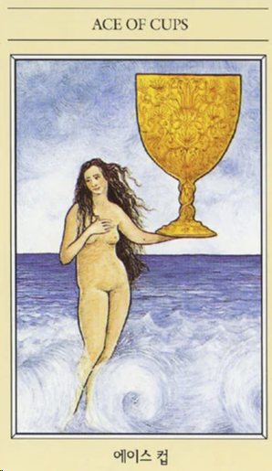
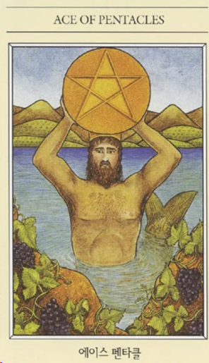
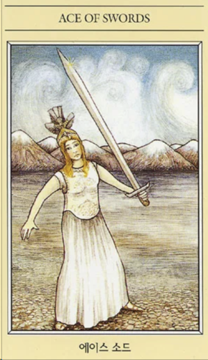
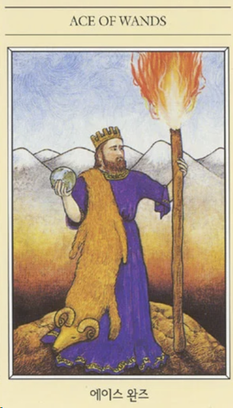

кубок

цвет: морская волна, нежно розовый
фигура: нет фигуры, принимает ту форму, которая необходимо
символ: капля
буква: о
ощущения: нежности, трпетности, но иногда комок к горлу
запах: нежный, цветочный, едва уловимый
звук: ханг
вкус: мне почему то показалось вино :) что-то такое, что делает веселым и счастливым
астрология: Луна, Нептун, Рыбы, Рак
ключевые слова: вдохновение
пентакль

цвет: желтый (цвет Золота, ценность, благородность), зеленый (растения, плодородие, жизнь, материальное, функциональное), красный (отголосок огня), коричневый (приглушенный крсный, материализованная энергия), черный (земля, чернозем, почва)
фигура: квадрат - устойчивость (печать),
символ: монета (ценность)
буква: м (реактивное, пассивное),
ощущения: надежности, защиты, верности, радости (следствие, но не сигнификатор), чувство удачи
умиротворение,
запах: роза. мб. даже что-то терпкое, (ветивер, дубовый мох), березовый деготь, уголь,
звук: шаманский бубен (приглушенный звук), басы,
вкус: солоноватый,
астрология: тригон земли,
ключевые слова: Дар, Основа, Корни.
меч

цвет: голубой(Небо), белый (облака, воздушность, легкость),
красный (цвет огня, вкрапления огня, кровь, Если Меч = Огонь)
жёлтый (), пастельные (не спектральный),
фигура: треугольник
символ: меч
буква: А Л
ощущения: энергия (наполненность), сила (огонь), воля (огонь), решение (огонь+чуть воздух), инициатива (огонь), ощущение границ (воздух), либо преодолевание этих границ (воздух+огонь)
запах: ментол, эвкалипт
звук: колокола,
вкус: кислый
астрология: воздушный тригон
Марс
ключевые слова: Сила, Воля (Огонь)
(Проникновение), (Граница), (Связь)
жезл

цвет: красный (огонь, энергия, жизненность), синий (неоновый, необжигающее пламя), желтый (солнце, активность)
фигура: вертикальное что-то, стрелочка вверх,
символ: факел,
буква: I
ощущения: старт, рывок, действие, прорыв, скачок, риск
запах: корица, гвоздика,
звук: горн, гонг,
вкус: острый
астрология: Овен, Лев, Стрельца.
ключевые слова: риск - дело благородное, кто не рискует, тот не пьет шампанского,
старт, начало, воля, инициатива.